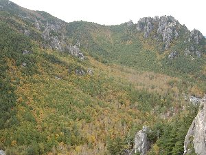
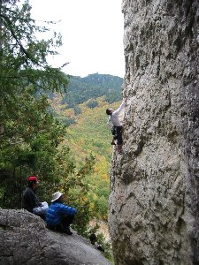
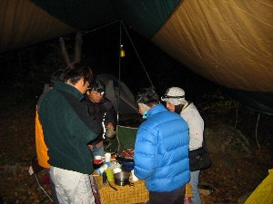
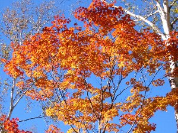

秋の小川山キャンプ | 2004年10月16.17日 |
|---|---|
| 参加者：キッカー、ヨースケ、徳ちゃん、マーシー一家、べっしー、土曜のみ：いずみさん、Ryuuさん 毎年恒例になりつつある、紅葉時期の通称小川山と呼んでいる、長野県の「廻り目平キャンプ場」へ、今年も一足早い紅葉を楽しんで来ました。 標高が1600ｍ近くも有るキャンプ場は、静岡より早い紅葉時期を迎えていました。 金曜の夜出発して、深夜到着。途中の国道52号が相次ぐ台風の影響か、通行止めや片側通行が多かった。深夜到着して、取り合えずテントを建て睡眠。と言っても、テント泊は徳ちゃんと私（べっしー）のみ。他の人は車中泊。 着いた時から寒かったが、明け方はさらに冷え込みました。裸足で、上はＴシャツ一枚での寝袋は、ちょっとキツイです。足元が寒かった・・・ | |
 岩場に向かう途中、こんな川を渡ります。 |  岩場から頂上から見た廻り目平 |
| 土曜日（一日目）は曇り空。どんよりしているわけではないけれど、すっきりしないお天気です。今日は久しぶりにクライミングに挑戦！キッカー達に付いて行って、岩場を目指します。冷たい川を渡り、獣道を登り、大きな岩に到着。後ろに山を背負い、目の前の景色を塞ぐように（実際塞いでいるわけだが）大きな岩山がそびえています。早速キッカー達は登り始め、私はしばし見学。この岩山を登り切った先に、キャンプ場周辺の広大な景色が拝めるようです。 午後になって、やっとやる気を出して、一番簡単なルートを登り始めます。簡単と言う割には、掴（つか）むところが分からず、なかなか上に進めません。何度も落ちそうになりながら（テンション掛かりまくり）何とか岩の頂上にしがみ付きました。そこは包丁の刃の様に鋭く、向こう側は垂直な崖になっていて、眼下には紅葉で埋め尽くされたキャンプ場が広がっていました。 登った甲斐があったと言うものです。その、壮大な光景を写真で表現するには難しい・・・・登ってみて！ | |
|  後ろ見える風景が、またキレイなんです。 |  夕食会。ちゃんとイスは有りますよ。 |
| 夕食の買出しは、いつものスーパー「ナナーズ」。去年買ったという地元産のしいたけ類は見つからなかったものの、エリンギや他のキノコ類を大量に買い付け、今夜のメインはキノコ鍋です。味噌仕立てのキノコ鍋はメチャ美味です。(^○^) なんと言ってもエリンギが美味しかった。後はビールを飲みながら焼肉やってご機嫌です。（夕食を食べ終わって、いずみさんとRyuuさんは帰宅。明日は町内の行事とかが有るそうで。残念） 空の雲は無くなり、星が綺麗に見えました。天の川も見えます。 夜になるとキャンプ場はだいぶ冷えてきます。焼肉を終えた七輪をテーブルの下に置き、テーブルの上からはビニールを被せて、キッカー考案のコタツの完成です。これが暖かい！ 酒も入り、寒さも増してきた夜9時には就寝。今日は足元もカバーし、寝袋の上に上着を掛け万全な体制で寝ます。おかげで朝まで暖かでした。（そうでない人もいたようですが・・・） 大体、朝起きると車に付いた夜露が凍るくらい寒いのだから半端ではないです。 | |
 これがキノコ鍋です。よく見えませんね。 |  実際の現場は非常に綺麗ですよ |
| 日曜日（二日目）は打って変わって快晴！ 空気が冷たく、薄青い空は完全な秋の装いです。今日は写真を撮る為、単独行動。午前中は山の方に。途中でマーシーと娘のみうちゃんと合流。みうちゃん３歳なのに良く登ります！危ない箇所も有るのでちょっとハラハラ。まあ、お父さんがしっかりしているから大丈夫か。 テント場で昼食を取り、午後は川の方へ。ココの川が透き通る青で、すごくキレイです。天気が良すぎるくらい気持ち良いのですが、紅葉を撮るには若干曇りのほうが良かったりする場合が有り、しかし発色を考えるとやはり天気が良い方がいい訳で、等とジレンマを抱えながら上流へと向かいます。白樺やもみじ等を撮り、紅葉を満悦した後、キャンプ場を後にしました。 この時期の小川山は、寒いけど気持ち良いです。夏のキャンプとは一味違った物が得られるでしょう。ただし、防寒対策は万全に！ 写真は・・・・あー、まだまだ腕が未熟ですね。なかなか上手く撮れない。ココに載せた写真はデジカメですが、フィルムでも撮ってまして、まあ、こんなモンです。 | |
 金峰山川 |  キャンプ場のモミジ |
| コメント＆写真 ｂｙ べっしー | |